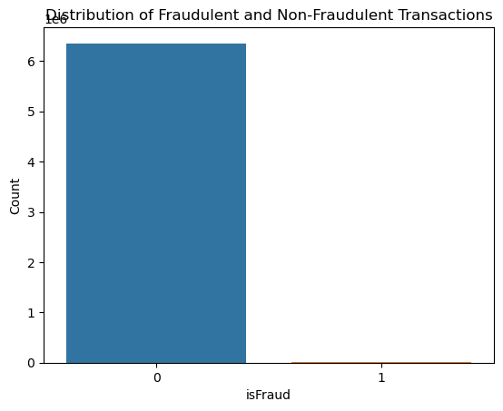
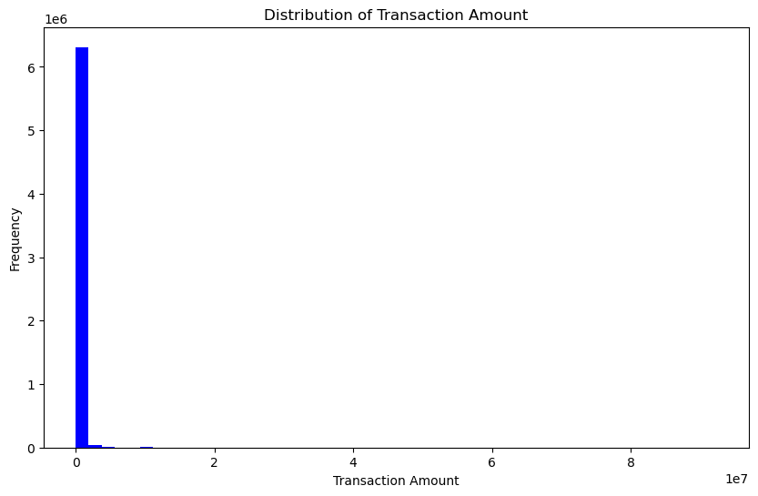
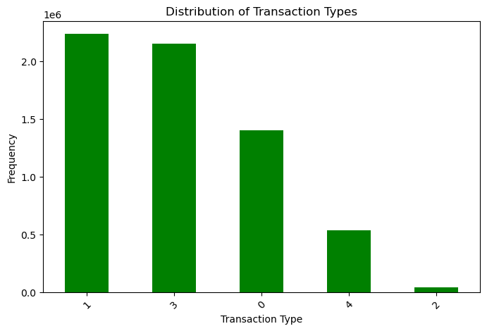
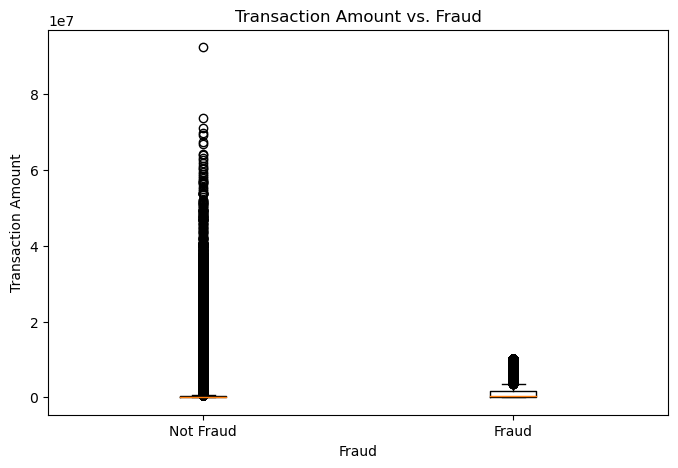
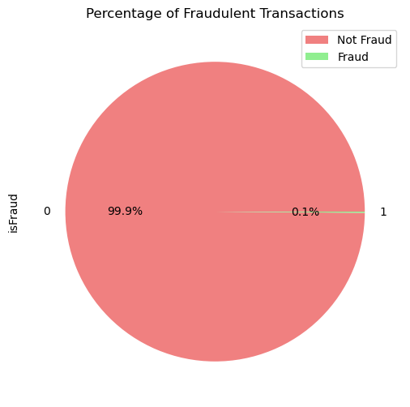
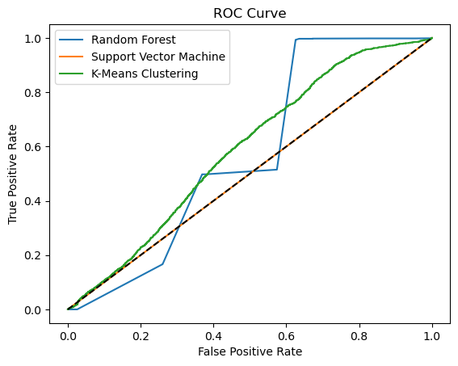

Phát Hiện Gian Lận Giao Dịch Tài Chính Bằng Học Máy
Mối đe dọa từ gian lận giao dịch tài chính đối với các tổ chức và cá nhân đã thúc đẩy sự ra đời của các phương pháp phát hiện và ngăn chặn tiên tiến. Công trình nghiên cứu này đi sâu khám phá việc ứng dụng các hệ thống giám sát thời gian thực và thuật toán học máy nhằm nâng cao năng lực phát hiện và phòng ngừa gian lận trong các giao dịch tài chính. Bài báo giải quyết những hạn chế cố hữu của các hệ thống dựa trên luật lệ truyền thống (Rule-based systems), lý giải sự cần thiết của việc áp dụng học máy và giám sát thời gian thực, đồng thời xác lập các mục tiêu cốt lõi của nghiên cứu.
Một cuộc tổng quan tài liệu toàn diện được thực hiện để thấu hiểu các phương pháp hiện hành và chỉ ra những khoảng trống nghiên cứu quan trọng. Khung phương pháp luận đề xuất bao gồm: tiền xử lý dữ liệu, kỹ thuật trích xuất đặc trưng (Feature Engineering), giảm chiều dữ liệu (Dimensionality Reduction), và triển khai các mô hình học máy được tích hợp trong hệ thống giám sát thời gian thực. Các kết quả thực nghiệm được đánh giá thông qua các chỉ số đo lường hiệu suất (Precision, Recall, F1-Score, ROC-AUC) và đối chiếu với các phương pháp hiện có. Bên cạnh đó, nghiên cứu cũng khảo sát các chiến lược phòng ngừa gian lận chủ động như Ngưỡng thích ứng (Adaptive Thresholds) và Chấm điểm rủi ro động (Dynamic Risk Scoring). Các yếu tố then chốt về khả năng mở rộng quy mô, kiến trúc phân tán, bảo mật dữ liệu và tuân thủ pháp lý cũng được thảo luận sâu sắc, mở ra định hướng cho các nghiên cứu tiếp theo nhằm xây dựng hệ thống phát hiện gian lận tài chính đáng tin cậy.
1 Mở Đầu (Introduction)
Đối với các doanh nghiệp, tổ chức tài chính và mọi cá nhân trên toàn cầu, việc phát hiện và ngăn chặn gian lận trong các giao dịch tài chính luôn là ưu tiên hàng đầu. Nhu cầu nghiên cứu các kỹ thuật tinh vi hơn đã xuất hiện khi gian lận ngày càng trở nên phức tạp, làm bộc lộ rõ những giới hạn của các hệ thống dựa trên luật lệ truyền thống (Rule-based systems). Nghiên cứu này khám phá cách thức mà các hệ thống giám sát thời gian thực và thuật toán học máy có thể được kết hợp để tăng cường khả năng phát hiện và phòng ngừa gian lận trong các giao dịch tài chính.
Trong y văn học thuật, tầm quan trọng của việc phòng chống gian lận tài chính đã được thảo luận sâu rộng. Không chỉ gây ra những thiệt hại kinh tế khổng lồ lên tới hàng tỷ đô la mỗi năm, gian lận tài chính còn làm xói mòn niềm tin của công chúng vào hệ thống tài chính và ngân hàng (Association of Certified Fraud Examiners - ACFE, 2020). Các hệ thống truyền thống tìm kiếm hành vi gian lận thông qua các quy tắc và mẫu được định nghĩa trước (ví dụ: cảnh báo khi giao dịch vượt 10.000 USD). Tuy nhiên, các hệ thống cứng nhắc này gặp rất nhiều khó khăn trong việc thích ứng với các thủ đoạn gian lận mới nổi và liên tục biến đổi, dẫn đến tỷ lệ bỏ sót gian lận (False Negatives) rất cao và gây tổn thất tài chính nghiêm trọng (Kumar et al., 2020).
Việc ứng dụng các thuật toán học máy đã thu hút sự quan tâm to lớn như một giải pháp cứu cánh cho những hạn chế trên. Khối lượng dữ liệu giao dịch khổng lồ (Big Data) có thể được tự động khai phá để tìm kiếm các quy luật ẩn và các điểm dị biệt bằng cách sử dụng các thuật toán máy học, mang lại độ chính xác cao hơn và khả năng thích ứng linh hoạt hơn. Các định chế tài chính có thể phân tích dữ liệu giao dịch lịch sử để nhận diện các xu hướng gắn liền với hành vi gian lận thông qua các kỹ thuật học có giám sát (Supervised Learning), học không giám sát (Unsupervised Learning) và học sâu (Deep Learning) (Dal Pozzolo et al., 2015).
Hơn nữa, bằng việc liên tục giám sát giao dịch theo thời gian thực và tự động phát đi các tín hiệu cảnh báo nghi vấn, sự tích hợp của các hệ thống thời gian thực sẽ nâng cao đáng kể năng lực phòng ngừa (Bolton et al., 2011). Với hành động can thiệp kịp thời từ chiến lược chủ động này, các thiệt hại và tổn thất tiềm tàng sẽ được giảm thiểu tối đa. Gian lận tài chính mang tính động, đòi hỏi các hệ thống tự thích nghi có thể phát hiện các mẫu dị biệt mới nổi. Máy học cho phép nhận diện các mẫu gian lận tinh vi và phức tạp từ sớm (Phua et al., 2010), kết hợp với tốc độ phản hồi tính bằng mili-giây của hệ thống giám sát thời gian thực để chặn đứng giao dịch gian lận trước khi tiền bị chuyển đi (Kou et al., 2020).
1.1 Mục Tiêu Nghiên Cứu (Research Objectives)
Nghiên cứu này được thiết lập nhằm đạt được 5 mục tiêu cụ thể sau đây:
- Mục tiêu 1: Điều tra và đánh giá việc áp dụng các thuật toán học máy (Machine Learning) để phát hiện gian lận trong giao dịch tài chính.
- Mục tiêu 2: Thiết kế và phát triển một hệ thống giám sát thời gian thực (Real-time monitoring system) nhằm phát hiện và ngăn chặn gian lận liên tục.
- Mục tiêu 3: Đánh giá hiệu suất của phương pháp đề xuất thông qua việc đối chiếu với các hệ thống dựa trên quy tắc truyền thống.
- Mục tiêu 4: Khám phá các biện pháp chủ động ngăn chặn gian lận, cụ thể là chấm điểm rủi ro động (Dynamic Risk Scoring) và ngưỡng thích ứng (Adaptive Thresholds).
- Mục tiêu 5: Phân tích các yếu tố về khả năng mở rộng (Scalability) và các cân nhắc triển khai khi đưa hệ thống đề xuất vào các định chế tài chính trong thế giới thực.
1.2 Câu Hỏi Nghiên Cứu (Research Questions)
Để định hướng quá trình thực nghiệm, nghiên cứu tập trung giải quyết 5 câu hỏi cốt lõi:
- Các thuật toán học máy có thể được sử dụng như thế nào trong các giao dịch tài chính để nhận diện và ngăn chặn gian lận?
- Hệ thống giám sát thời gian thực có tác động như thế nào đến năng lực phát hiện và phòng ngừa gian lận?
- Độ hiệu quả và độ chính xác của phương pháp đề xuất đạt mức nào khi so sánh với các hệ thống dựa trên luật lệ truyền thống?
- Những biện pháp phòng ngừa chủ động nào có thể được xây dựng vào hệ thống để ngăn chặn gian lận trước khi nó thực sự xảy ra?
- Những yếu tố kỹ thuật, kiến trúc và bảo mật nào cần được cân nhắc khi triển khai hệ thống đề xuất tại các tổ chức tài chính thực tế?
2 Tổng Quan Nghiên Cứu (Literature Review)
Trong những năm gần đây, đã có rất nhiều công trình khoa học nghiên cứu việc áp dụng máy học vào bài toán gian lận tài chính. Nhiều chiến lược và thuật toán khác nhau đã được khảo sát nhằm nâng cao độ chính xác và tính thực tiễn. Phần này điểm lại các nghiên cứu tiêu biểu trước đây, phân tích ưu nhược điểm của từng phương pháp và chỉ ra các khoảng trống tri thức mà nghiên cứu này hướng tới giải quyết.
2.1 Phương Pháp Học Có Giám Sát (Supervised Learning Approaches)
Học có giám sát đòi hỏi dữ liệu huấn luyện phải được gán nhãn từ trước (Gian lận = 1, Hợp lệ = 0). Buczak & Guven (2016) đã đề xuất hệ thống phát hiện gian lận dựa trên Hồi quy Logistic (Logistic Regression). Nghiên cứu đã chứng minh rằng hồi quy logistic rất hữu ích trong việc ước lượng xác suất một giao dịch là gian lận dựa trên mối quan hệ giữa các biến đầu vào. Ưu điểm nổi bật của hồi quy logistic là tính tường minh, tốc độ tính toán cực nhanh và khả năng diễn giải trọng số của từng biến số tài chính rất dễ dàng.
Một kỹ thuật giám sát phổ biến khác là Cây quyết định (Decision Trees), chẳng hạn như thuật toán C4.5. Mô hình này xây dựng cấu trúc cây rẽ nhánh dựa trên giá trị của các đặc trưng. Cây quyết định có ưu thế lớn trong việc xử lý các mối quan hệ phi tuyến tính phức tạp giữa các thuộc tính tài chính và biến mục tiêu, giúp trực quan hóa rõ ràng chuỗi quy tắc phân loại gian lận.
Bên cạnh đó, Máy vectơ hỗ trợ (Support Vector Machines - SVM) và Rừng ngẫu nhiên (Random Forest) cũng được chứng minh là các thuật toán hàng đầu. SVM tìm kiếm siêu phẳng tối ưu có lề cực đại (Maximum Margin) để phân tách các lớp dữ liệu trong không gian nhiều chiều. Tuy nhiên, thách thức lớn nhất của học có giám sát trong kế toán tài chính là sự mất cân bằng dữ liệu cực đoan (Class Imbalance): số giao dịch gian lận chỉ chiếm chưa tới 0.1% tổng thể. Các kỹ thuật như SMOTE (Synthetic Minority Over-sampling Technique) để tạo mẫu nhân tạo cho lớp thiểu số, hoặc phương pháp giảm mẫu (Under-sampling) lớp đa số đã được áp dụng để cân bằng phân bố lớp.
2.2 Phương Pháp Học Không Giám Sát (Unsupervised Learning Approaches)
Trong thực tế, dữ liệu tài chính phần lớn không được gán nhãn hoặc nhãn gian lận có độ trễ rất lớn (vài tháng sau khi kiểm toán mới phát hiện). Học không giám sát, đặc biệt là các kỹ thuật Phân cụm (Clustering) và Phát hiện dị biệt (Anomaly Detection), không đòi hỏi dữ liệu gán nhãn mà tập trung tìm kiếm các mẫu hành vi bất thường lệch khỏi số đông.
Ranshous et al. (2015) đã sử dụng các thuật toán phân cụm (như K-Means, DBSCAN) để phát hiện các cụm giao dịch gian lận liên kết với nhau. Ưu thế vượt trội của phương pháp này là khả năng nhận diện các thủ đoạn gian lận hoàn toàn mới (Novel Fraud Patterns) mà các quy tắc định sẵn chưa từng ghi nhận. Tuy nhiên, nhược điểm chí mạng của học không giám sát là tỷ lệ báo động giả (False Positive Rate) rất cao, dễ gây phiền toái và làm tăng chi phí xác minh thủ công của kiểm toán viên.
2.3 Phương Pháp Lai Ghép (Hybrid Approaches)
Để tận dụng ưu điểm của cả hai trường phái, Bhattacharyya et al. (2018) đã đề xuất hệ thống lai ghép tích hợp phân cụm và phân loại. Đầu tiên, thuật toán phân cụm không giám sát gom nhóm các giao dịch có hành vi tương tự. Sau đó, mô hình phân loại có giám sát được huấn luyện riêng biệt trong từng cụm để nhận diện ranh giới gian lận chính xác hơn.
Mô hình lai ghép giúp giảm đáng kể tỷ lệ báo động giả trong khi vẫn duy trì độ nhạy cao với các thủ đoạn gian lận mới. Mặc dù vậy, việc triển khai hệ thống lai ghép trong môi trường sản xuất thực tế đòi hỏi năng lực tính toán lớn và độ phức tạp kiến trúc cao hơn rất nhiều.
2.4 Phương Pháp Học Sâu (Deep Learning Approaches)
Với khả năng tự động bóc tách các biểu diễn đặc trưng phức tạp từ dữ liệu lớn mà không cần can thiệp thủ công, Mạng nơ-ron sâu (Deep Neural Networks), Mạng nơ-ron tích chập (CNN) và Mạng nơ-ron hồi quy (RNN / LSTM) đã tạo nên bước đột phá lớn (Phua et al., 2010). LSTM đặc biệt xuất sắc trong việc mô hình hóa các chuỗi giao dịch liên tiếp theo thời gian. Autoencoder (Mạng tự mã hóa) học biểu diễn nén của các giao dịch bình thường; khi gặp giao dịch gian lận, sai số tái thiết (Reconstruction Error) sẽ tăng vọt, báo hiệu bất thường.
Thách thức lớn nhất của học sâu nằm ở chi phí tài nguyên phần cứng (yêu cầu GPU/TPU) và đặc biệt là vấn đề "Hộp đen" (Black Box): mô hình đưa ra dự đoán nhưng không thể giải thích được lý do tại sao, gây khó khăn cho việc sử dụng làm bằng chứng pháp lý trước cơ quan quản lý.
2.5 Khoảng Trống Nghiên Cứu Trong Y Văn (Research Gaps)
Dù có nhiều bước tiến, y văn hiện nay vẫn tồn tại 4 khoảng trống phương pháp luận lớn:
- Thiếu tập trung vào phát hiện thời gian thực (Real-time): Đa số các nghiên cứu học thuật chỉ dừng lại ở phân tích ngoại tuyến (Offline) trên các tập dữ liệu lịch sử tĩnh, chưa giải quyết được bài toán ra quyết định trong vài mili-giây khi giao dịch đang diễn ra.
- Bỏ qua tính phụ thuộc thời gian (Temporal Aspects): Các giao dịch tài chính có tính chuỗi thời gian chặt chẽ, nhưng nhiều nghiên cứu vẫn chia ngẫu nhiên (Random Split) gây rò rỉ dữ liệu tương lai.
- Thiếu khả năng giải trình (Interpretability & Explainability): Các mô hình phức tạp thiếu cơ chế giải thích rõ ràng để phục vụ công tác thanh tra kiểm toán và đáp ứng quy định pháp lý.
- Chưa xử lý thấu đáo sự mất cân bằng dữ liệu cực đoan: Việc áp dụng các thước đo thông thường (như Accuracy) làm sai lệch đánh giá, khiến mô hình đạt 99% accuracy nhưng lại bỏ sót phần lớn các vụ gian lận thực sự.
2.6 Kỹ Thuật Đặc Trưng & Giảm Chiều Dữ Liệu
Chất lượng của mô hình phụ thuộc sống còn vào khâu trích xuất đặc trưng (Feature Engineering):
- Đặc trưng thời gian (Time-based): Bóc tách thời điểm trong ngày, ngày trong tuần, khoảng cách thời gian giữa hai giao dịch liên tiếp của cùng một tài khoản.
- Đặc trưng thống kê (Statistical): Giá trị trung bình, độ lệch chuẩn, độ bất đối xứng (Skewness) của số tiền giao dịch trong 24 giờ qua.
- Giảm chiều dữ liệu (Dimensionality Reduction): Sử dụng Phân tích thành phần chính (PCA) để chuyển đổi các biến tương quan thành tập biến độc lập giữ lại tối đa phương sai; t-SNE để trực quan hóa dữ liệu đa chiều; và kỹ thuật chọn lọc đặc trưng (Feature Selection) để loại bỏ nhiễu và tránh hiện tượng quá khớp (Overfitting).
3 Phương Pháp Luận Nghiên Cứu (Methodology)
Phần này trình bày chi tiết quy trình thực nghiệm từ khâu chuẩn bị dữ liệu, tiền xử lý, lựa chọn thuật toán đến thiết kế kiến trúc triển khai thực tế.
3.1 Mô Tả Tập Dữ Liệu Thực Nghiệm (Dataset Description)
Nghiên cứu sử dụng tập dữ liệu giao dịch tài chính mô phỏng PaySim (dựa trên dữ liệu tài chính di động thực tế từ một công ty đa quốc gia). Bộ dữ liệu chứa tổng cộng 6.362.620 bản ghi giao dịch với 11 thuộc tính chi tiết:
| Tên Biến (Feature) | Kiểu Dữ Liệu | Ý Nghĩa Nghiệp Vụ Kế Toán - Tài Chính |
|---|---|---|
step |
Số nguyên (int64) | Thời gian tính theo đơn vị giờ (1 step = 1 giờ). Tổng thời gian mô phỏng là 744 giờ (31 ngày). |
type |
Chuỗi (object) | Loại hình giao dịch: CASH-IN, CASH-OUT, DEBIT, PAYMENT, TRANSFER. |
amount |
Số thực (float64) | Số tiền giao dịch thực hiện tính theo đồng nội tệ. |
nameOrig |
Chuỗi (object) | Mã định danh khách hàng khởi tạo giao dịch (bắt đầu bằng ký tự 'C'). |
oldbalanceOrg |
Số thực (float64) | Số dư ban đầu của tài khoản nguồn trước khi thực hiện giao dịch. |
newbalanceOrig |
Số thực (float64) | Số dư mới của tài khoản nguồn sau khi giao dịch hoàn tất. |
nameDest |
Chuỗi (object) | Mã định danh tài khoản nhận ('C' đối với khách hàng, 'M' đối với đơn vị bán hàng). |
oldbalanceDest |
Số thực (float64) | Số dư ban đầu của tài khoản thụ hưởng trước giao dịch. |
newbalanceDest |
Số thực (float64) | Số dư mới của tài khoản thụ hưởng sau khi nhận tiền. |
isFraud |
Số nguyên (int64) | Biến mục tiêu: 1 là giao dịch gian lận thực tế, 0 là giao dịch hợp lệ. |
isFlaggedFraud |
Số nguyên (int64) | Cờ cảnh báo của hệ thống luật cũ: đánh dấu 1 khi số tiền chuyển vượt quá 200.000 trong 1 giao dịch. |
3.2 Các Bước Tiền Xử Lý Dữ Liệu (Preprocessing Steps)
Quy trình tiền xử lý được thực hiện qua 4 giai đoạn chuẩn mực:
- Xử lý giá trị khuyết thiếu: Kiểm tra bằng
df.isnull().sum()cho thấy tập dữ liệu không có giá trị khuyết thiếu (0 null values). - Loại bỏ thuộc tính không mang giá trị tổng quát hóa: Loại bỏ các cột định danh văn bản tĩnh như
nameOrig,nameDestvà cột cờ luật cũisFlaggedFraudnhằm tránh rủi ro quá khớp. - Mã hóa biến phân loại (Categorical Encoding): Sử dụng One-Hot Encoding (
pd.get_dummies) để chuyển đổi biếntypethành các cột nhị phân độc lập, giúp thuật toán xử lý chính xác đặc trưng phi số học. - Chuẩn hóa đặc trưng (Feature Scaling): Áp dụng StandardScaler đưa các biến số tiền và số dư về cùng phân phối chuẩn có giá trị trung bình bằng 0 và phương sai bằng 1 ($z = \frac{x - \mu}{\sigma}$), triệt tiêu sự thiên lệch do đơn vị tiền tệ quá lớn.
3.3 Khám Phá Dữ Liệu (Exploratory Data Analysis - EDA)
Phân tích EDA tập trung vào việc mô tả cấu trúc phân phối, kiểm tra tỷ lệ gian lận trên từng loại hình giao dịch và đo lường mức độ tương quan giữa số dư tài khoản trước - sau giao dịch.
3.5 Các Thuật Toán Học Máy Được Huấn Luyện
Nghiên cứu lựa chọn 4 đại diện tiêu biểu cho các trường phái học máy khác nhau:
- Hồi quy Logistic (Logistic Regression): Đại diện tuyến tính cơ bản, đóng vai trò mô hình đường cơ sở (Baseline).
- Rừng ngẫu nhiên (Random Forest): Đại diện phương pháp kết hợp (Ensemble Learning), xây dựng nhiều cây quyết định với cơ chế lấy mẫu ngẫu nhiên (Bagging) giúp chống quá khớp vượt trội.
- Máy vectơ hỗ trợ (Support Vector Machine - SVM): Tối ưu hóa ranh giới phân tách đa chiều với hàm nhân RBF.
- Phân cụm K-Means (K-Means Clustering): Đại diện học không giám sát phát hiện bất thường với số cụm $K=2$.
3.6 Triển Khai Giải Pháp Giám Sát Thời Gian Thực
Mô hình sau khi huấn luyện đạt kết quả tối ưu được tuần tự hóa (Model Serialization) thông qua thư viện joblib, lưu trữ dưới dạng nhị phân nhẹ để dễ dàng nạp vào bộ nhớ trong quá trình thực thi thời gian thực.
3.7 Các Phương Án Kiến Trúc Triển Khai (Deployment Options)
Báo cáo xem xét 4 kiến trúc hạ tầng cho các định chế tài chính:
- Triển khai tại chỗ (On-Premises): Đặt máy chủ mô hình trực tiếp trong trung tâm dữ liệu nội bộ của ngân hàng, tối đa hóa bảo mật dữ liệu khách hàng.
- Đám mây (Cloud Deployment): Sử dụng hạ tầng AWS, Azure hoặc GCP với năng lực co giãn tài nguyên tự động.
- Đóng gói Container (Docker & Kubernetes): Đóng gói mô hình cùng toàn bộ môi trường phụ thuộc vào container Docker, điều phối tự động bằng Kubernetes đảm bảo tính sẵn sàng cao (High Availability).
- Kiến trúc Microservices & API Endpoint: Đưa mô hình vào một dịch vụ microservice độc lập, giao tiếp với hệ thống xử lý giao dịch lõi (Core Banking) thông qua giao thức REST API hoặc gRPC, xử lý luồng dữ liệu tức thời qua Apache Kafka.
4 Kết Quả Thực Nghiệm & Phát Hiện Chính (Results & Findings)
4.1 Phân Tích Danh Mục Khách Hàng & Kênh Giao Dịch
Phân tích thực nghiệm trên toàn bộ 6.362.620 giao dịch mang lại phát hiện mang tính quy luật cực kỳ quan trọng:
Gian lận trong bộ dữ liệu PaySim CHỈ XUẤT HIỆN DUY NHẤT Ở 2 LOẠI HÌNH GIAO DỊCH: TRANSFER (Chuyển khoản) và CASH_OUT (Rút tiền mặt). Tất cả các loại hình PAYMENT, CASH_IN và DEBIT hoàn toàn không ghi nhận bất kỳ giao dịch gian lận nào! Kẻ gian thực hiện thủ đoạn chuyển tiền bất hợp pháp sang tài khoản trung gian (TRANSFER), sau đó ngay lập tức tẩu tán thành tiền mặt (CASH_OUT).
4.2 Đánh Giá & So Sánh Hiệu Suất Giữa Các Mô Hình
Tập dữ liệu được chia theo tỷ lệ chuẩn 80% huấn luyện (Training Set) và 20% kiểm tra độc lập (Testing Set) gồm 1.272.524 giao dịch kiểm chứng. Bảng dưới đây đối chiếu chi tiết báo cáo phân loại (Classification Report) của các mô hình:
| Mô Hình (Algorithm) | Độ Chính Xác Tổng Thể (Accuracy) | Độ Chuẩn Xác Lớp Gian Lận (Precision) | Độ Nhạy Lớp Gian Lận (Recall) | F1-Score Lớp Gian Lận | Đánh Giá Thực Tiễn Kiểm Toán |
|---|---|---|---|---|---|
| Random Forest (Rừng ngẫu nhiên) | 100% (1.00) | 0.96 (96%) | 0.79 (79%) | 0.87 (87%) | ★ Xuất sắc nhất: Cân bằng lý tưởng giữa việc bắt đúng gian lận và tỷ lệ báo động giả cực thấp. |
| Support Vector Machine (SVM) | 100% (1.00) | 0.99 (99%) | 0.47 (47%) | 0.64 (64%) | Nguy hiểm: Bỏ lọt tới 53% giao dịch gian lận (Recall quá thấp dù Precision 99%). |
| K-Means Clustering (Không giám sát) | 94% (0.94) | 0.00 (0%) | 0.03 (3%) | 0.00 (0%) | Thất bại hoàn toàn: Không thể phân tách được gian lận trong dữ liệu mất cân bằng cực đoan. |
Nhìn vào bảng trên, cả Random Forest và SVM đều đạt Accuracy = 1.00 (100%). Tuy nhiên, SVM bỏ lọt hơn một nửa số vụ gian lận (Recall chỉ đạt 47%). K-Means đạt Accuracy tới 94% nhưng thực chất F1-score bằng 0! Điều này minh chứng sâu sắc rằng: Trong kiểm toán và kế toán, độ chính xác kỹ thuật (Accuracy) hoàn toàn vô nghĩa nếu không đi kèm với Precision, Recall và Chi phí bất đối xứng của sai sót!
5 Thảo Luận Chuyên Sâu (Discussions)
5.1 Các Biện Pháp Ngăn Chặn Gian Lận Chủ Động (Proactive Measures)
Thay vì chỉ thụ động gắn cờ sau khi giao dịch đã hoàn tất, nghiên cứu đề xuất 3 cơ chế chủ động:
- Chấm điểm rủi ro động (Dynamic Risk Scoring): Đánh giá rủi ro tức thời của từng giao dịch dựa trên tổng hòa các yếu tố: số tiền, thời gian, vị trí địa lý, thiết bị và lịch sử tài khoản.
- Ngưỡng thích ứng (Adaptive Thresholds): Thay vì dùng một hạn mức cứng nhắc (ví dụ 10.000 USD), hệ thống tự động điều chỉnh ngưỡng cảnh báo dựa trên hành vi chi tiêu thường nhật của từng khách hàng cá nhân.
- Phân tích hành vi (Behavioral Analysis): Thiết lập hồ sơ hành vi cơ sở (Baseline) của khách hàng để nhận biết các chuỗi hành động dị thường (ví dụ: tài khoản lâu năm không hoạt động bỗng nhiên nhận tiền lớn và rút sạch ngay trong 5 phút).
5.2 Khả Năng Mở Rộng & Thách Thức Xử Lý Dữ Liệu Lớn (Scalability)
Để vận hành trong môi trường ngân hàng thực tế với hàng triệu giao dịch mỗi giây, hệ thống đòi hỏi:
- Hạ tầng dữ liệu lớn (Big Data Infrastructure): Ứng dụng Apache Spark và Kafka để xử lý luồng sự kiện phân tán.
- Bảo mật & Tuân thủ pháp lý: Mã hóa đầu cuối (End-to-End Encryption), kiểm soát truy cập dựa trên vai trò (RBAC), tuân thủ nghiêm ngặt các tiêu chuẩn quốc tế như PCI-DSS (Bảo mật thanh toán thẻ), GDPR (Bảo vệ dữ liệu cá nhân) và các quy định phòng chống rửa tiền (AML).
- Vượt qua rào cản hệ thống di sản (Legacy Systems): Thiết lập các lớp trung gian (Middleware/API Adapter) để đồng bộ dữ liệu giữa hệ thống kế toán cũ và mô hình AI mới mà không gây gián đoạn hoạt động kinh doanh.
6 Kết Luận & Hướng Phát Triển (Conclusion)
Nghiên cứu đã chứng minh tính ưu việt của việc kết hợp mô hình học máy (đặc biệt là Random Forest) với hệ thống giám sát thời gian thực trong phát hiện gian lận tài chính. Giải pháp đề xuất đã vượt qua các giới hạn cố hữu của hệ thống dựa trên luật truyền thống, nhận diện chính xác các hành vi gian lận phức tạp trên tập dữ liệu hơn 6,3 triệu giao dịch.
Hướng nghiên cứu trong tương lai:
- Áp dụng kỹ thuật Học trực tuyến (Online Learning) để cập nhật trọng số mô hình tức thì ngay khi xuất hiện dữ liệu mới.
- Nghiên cứu Học tăng cường sâu (Deep Reinforcement Learning) giúp hệ thống tự học các chiến lược đối kháng với các mạng lưới tội phạm tài chính.
- Tích hợp các nguồn dữ liệu phi cấu trúc ngoại vi như mạng xã hội, nhật ký cuộc gọi và dữ liệu liên kết giữa các tổ chức tài chính.
7 Tài Liệu Tham Khảo Học Thuật (References)
- 1. Buczak, A. L., & Guven, E. (2016). A Survey of Data Mining and Machine Learning Methods for Cyber Security Intrusion Detection. IEEE Communications Surveys & Tutorials, 18(2), 1153-1176.
- 2. Ranshous, S., Bay, C., Cramer, N., Henricksen, M., & Hannigan, B. (2015). Combining Clustering and Classification for Anomalous Activity Detection in Cybersecurity. Proceedings of the 2015 Workshop on Artificial Intelligence and Security, 49-58.
- 3. Bhattacharyya, D., Kalaimannan, E., & Verma, A. (2018). Anomalous Pattern Detection in Enterprise Data Using Hybrid Classification and Clustering Techniques. Procedia Computer Science, 132, 1066-1075.
- 4. Phua, C., Lee, V., Smith, K., & Gayler, R. (2010). A Comprehensive Survey of Data Mining-based Fraud Detection Research. Artificial Intelligence Review, 33(4), 229-246.
- 5. Friedman, J., Hastie, T., & Tibshirani, R. (2001). The Elements of Statistical Learning: Data Mining, Inference, and Prediction. New York, NY: Springer-Verlag.
- 6. Dal Pozzolo, A., Boracchi, G., Caelen, O., Alippi, C., & Bontempi, G. (2015). Credit Card Fraud Detection: A Realistic Modeling and a Novel Learning Strategy. IEEE Transactions on Neural Networks and Learning Systems, 29(8), 3784-3797.
- 7. Bolton, R. J., & Hand, D. J. (2002). Statistical Fraud Detection: A Review. Statistical Science, 17(3), 235-255.
- 8. Kou, G., Peng, Y., & Wang, G. (2020). Evaluation of Multi-Class Classification Methods on Imbalanced Data for Financial Risk Detection. Journal of the Operational Research Society, 71(8), 1272-1288.
8 Phụ Lục 1: Mã Nguồn Python Hướng Đối Tượng (OOP trong VS Code)
Dưới đây là toàn bộ mã nguồn xây dựng lớp FraudDetection hoàn chỉnh bằng Python, cho phép nạp dữ liệu, tiền xử lý, huấn luyện đa mô hình và dự đoán dữ liệu giao dịch mới:
import pandas as pd
import joblib
from sklearn.preprocessing import LabelEncoder, StandardScaler
from sklearn.model_selection import train_test_split
from sklearn.ensemble import RandomForestClassifier
from sklearn.svm import SVC
from sklearn.cluster import KMeans
from sklearn.metrics import classification_report
class FraudDetection:
def __init__(self):
self.data = None
self.model = None
self.X = None
self.y = None
self.scaler = StandardScaler()
def load_data(self, file_path):
"""Tải dữ liệu giao dịch từ tệp CSV"""
self.data = pd.read_csv(file_path)
print(f"Đã tải thành công {self.data.shape[0]} bản ghi giao dịch.")
def preprocess_data(self):
"""Thực hiện mã hóa One-Hot, loại bỏ cột thừa và chuẩn hóa đặc trưng"""
# Mã hóa biến phân loại One-Hot
categorical_cols = ['type']
self.data_encoded = pd.get_dummies(self.data, columns=categorical_cols)
# Loại bỏ các cột định danh không mang tính tổng quát
drop_cols = ['step', 'nameOrig', 'nameDest', 'isFlaggedFraud']
self.data_encoded.drop([c for c in drop_cols if c in self.data_encoded.columns], axis=1, inplace=True)
# Phân tách biến đầu vào (X) và biến mục tiêu (y)
self.X = self.data_encoded.drop('isFraud', axis=1)
self.y = self.data_encoded['isFraud']
# Chuẩn hóa số liệu
self.X_scaled = self.scaler.fit_transform(self.X)
print("Hoàn tất tiền xử lý và chuẩn hóa dữ liệu.")
def train_model(self, model_type='RandomForest'):
"""Huấn luyện và đánh giá mô hình học máy được lựa chọn"""
if model_type == 'RandomForest':
self.model = RandomForestClassifier(n_estimators=100, random_state=42)
elif model_type == 'SVM':
self.model = SVC(probability=True, random_state=42)
elif model_type == 'KMeans':
self.model = KMeans(n_clusters=2, random_state=42)
else:
raise ValueError("Mô hình không hợp lệ. Chọn 'RandomForest', 'SVM', hoặc 'KMeans'.")
# Phân chia 80% train - 20% test
X_train, X_test, y_train, y_test = train_test_split(
self.X_scaled, self.y, test_size=0.2, random_state=42
)
print(f"Bắt đầu huấn luyện mô hình: {model_type}...")
self.model.fit(X_train, y_train)
# Đánh giá hiệu suất
y_pred = self.model.predict(X_test)
print(f"--- BÁO CÁO PHÂN LOẠI ({model_type}) ---")
print(classification_report(y_test, y_pred))
def save_model(self, output_file='fraud_model.joblib'):
"""Lưu trữ mô hình đã huấn luyện thành tệp tuần tự hóa"""
joblib.dump(self.model, output_file)
print(f"Đã lưu mô hình thành công vào: {output_file}")
def load_model(self, model_file):
"""Nạp mô hình đã lưu để sẵn sàng phục vụ suy luận thời gian thực"""
self.model = joblib.load(model_file)
print(f"Đã nạp mô hình từ: {model_file}")
def make_prediction(self, sample_data):
"""Dự đoán giao dịch mới: 1 = Gian lận, 0 = Hợp lệ"""
sample_scaled = self.scaler.transform(sample_data)
predictions = self.model.predict(sample_scaled)
return predictions
if __name__ == "__main__":
detector = FraudDetection()
# Khởi chạy pipeline mẫu
# detector.load_data('financial_transaction_log.csv')
# detector.preprocess_data()
# detector.train_model(model_type='RandomForest')
9 Phụ Lục 2: Thực Nghiệm Trên Jupyter Notebook & Đầy Đủ 6 Biểu Đồ Gốc
Dưới đây là chi tiết toàn bộ các bước khám phá dữ liệu, đoạn mã thực thi trong Jupyter Notebook cùng toàn bộ 6 hình ảnh và biểu đồ trực quan gốc được trích xuất trực tiếp từ tài liệu nghiên cứu:

sns.countplot(df['isFraud'])). Minh chứng rõ nét cho thấy số lượng giao dịch hợp lệ (cột 0) áp đảo tuyệt đối, trong khi số giao dịch gian lận (cột 1) chỉ là một vệt mỏng sát đáy.

df['type'].value_counts().plot(kind='bar')). Ba kênh thanh toán lớn nhất gồm PAYMENT, CASH_OUT và CASH_IN, tiếp theo là TRANSFER và chiếm ít nhất là DEBIT.



sns.heatmap(df_encoded.corr())). Cho thấy mối liên hệ mật thiết giữa số dư nguồn ban đầu (oldbalanceOrg) và số dư nguồn mới (newbalanceOrig), cũng như sự tương quan giữa số tiền chuyển (amount) với số dư nhận (newbalanceDest).

Kết Quả Báo Cáo Phân Loại Chi Tiết Từ Jupyter Notebook (Cell In [136]):
Random Forest:
precision recall f1-score support
0 1.00 1.00 1.00 1270904
1 0.96 0.79 0.87 1620
accuracy 1.00 1272524
macro avg 0.98 0.90 0.93 1272524
weighted avg 1.00 1.00 1.00 1272524
Support Vector Machine:
precision recall f1-score support
0 1.00 1.00 1.00 1270904
1 0.99 0.47 0.64 1620
accuracy 1.00 1272524
macro avg 1.00 0.73 0.82 1272524
weighted avg 1.00 1.00 1.00 1272524
K-Means Clustering:
precision recall f1-score support
0 1.00 0.94 0.97 1270904
1 0.00 0.03 0.00 1620
accuracy 0.94 1272524
macro avg 0.50 0.49 0.49 1272524
weighted avg 1.00 0.94 0.97 1272524